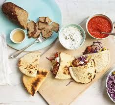

Ingridients
Make your own version of this takeaway favourite, complete with chilli and garlic sauces. Serve your homemade doner kebab with pitta bread and shredded cabbage
- 500g lamb mince
- 1 small onion, coarsely grated
- 4 garlic cloves, minced or finely grated
- 100g fresh breadcrumbs
- 2 tsp ground cumin
- 2 tsp ground coriander
- 1 tsp dried oregano
- ¼ tsp smoked paprika
- sunflower oil for oiling
To serve pitta breads, shredded red or white cabbage, sliced onion, chopped tomatoes, pickled chillies, chilli sauce (see recipe below), garlic sauce (see recipe below), tahini

STEP 1
Heat the oven to 200C/180C fan/gas 6. Tip all the ingredients except the oil into a food processor with a large pinch of salt and lots of ground pepper. Pulse until everything is combined and chopped together. You can also just squish everything together in a bowl but this will give you a looser finish.
STEP 2
Oil a large sheet of foil, tip the meat mix in the middle and mould to a very thick sausage, roughly the shape of an aubergine. Roll up the foil tightly, twisting up the ends to create a Christmas cracker shape.
STEP 3
Lay on a shallow roasting tin and roast in the oven for 35-40 mins, turning occasionally, or until a digital cooking thermometer reads 75C when pierced in the middle. Leave the kebab to cool a little, then unwrap the foil. Place back on the tray and brown under the grill or with a blowtorch.
STEP 4
Place on a board and carve into thin slices. For full doner mode, you can hold the kebab up with a roasting fork or metal skewer and carve. Serve with warm pitta bread and any of the other accompaniments, including our chilli sauce and garlic yogurt sauce.